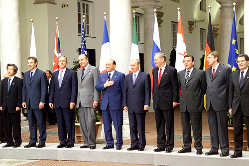
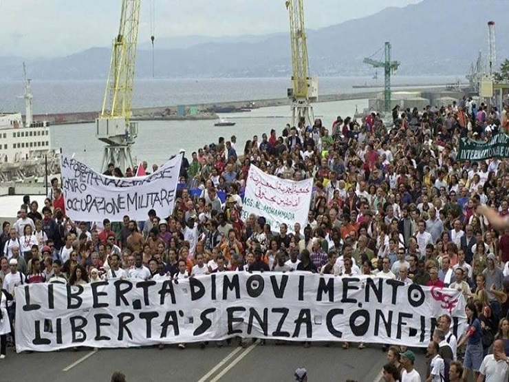
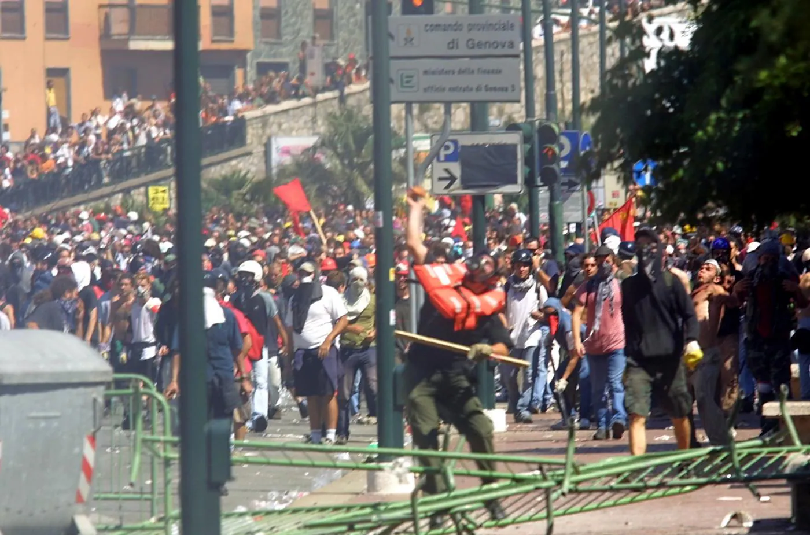
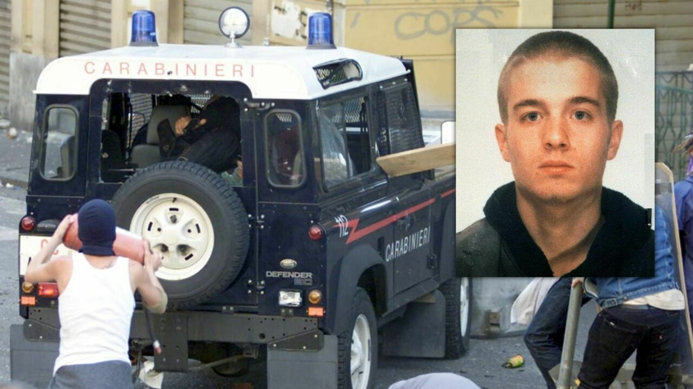
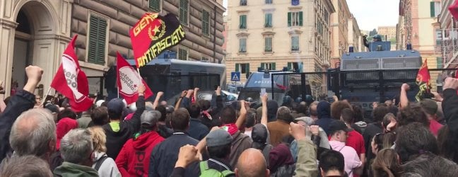
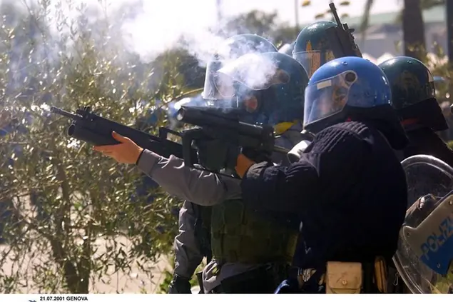

Marcia migranti e gli scontri di Venerdi 20/7/2001
FONTI: Wikipedia, IlPost, TheVision,
Introduzione
Il summit del G8 a Genova, tenutosi nel luglio del 2001, è stato uno degli incontri più controversi nella storia del G8 a causa delle violente proteste e degli scontri tra la polizia e i manifestanti. Ecco una relazione esaustiva sull'evento:
- Contesto: Il summit del G8 (Gruppo dei 7 paesi più industrializzati al mondo più la Russia) si è svolto a Genova, Italia, dal 20 al 22 luglio 2001. Era un momento di crescente attenzione sulle questioni globali, con la globalizzazione e il libero scambio al centro del dibattito politico.
- Preparativi: In previsione del summit, le autorità italiane hanno adottato misure di sicurezza senza precedenti, inclusa la chiusura di parti della città e la costruzione di recinzioni attorno alle aree del summit. Erano previste anche manifestazioni di protesta da parte di vari gruppi, tra cui organizzazioni antiglobalizzazione, movimenti pacifisti, ambientalisti e altri.
- Proteste: Decine di migliaia di manifestanti convergono verso Genova da tutto il mondo per esprimere il loro dissenso nei confronti delle politiche dei paesi del G8, soprattutto riguardo alla globalizzazione, alla povertà, all'ambiente e ai diritti umani.
- Gli scontri: Le proteste sono state inizialmente pacifiche, ma sono presto sfociate in violenti scontri con la polizia. Gli scontri più gravi si sono verificati il 20 luglio, quando la polizia ha cercato di disperdere una manifestazione non autorizzata presso la scuola Diaz, che fungeva da centro per i manifestanti. La polizia ha fatto irruzione nella scuola e ha brutalmente picchiato i manifestanti, lasciando molti feriti.
- Le vittime: Durante gli scontri, un manifestante italiano, Carlo Giuliani, è stato ucciso da un carabiniere durante una protesta. La sua morte ha suscitato indignazione e ha portato a ulteriori critiche nei confronti delle tattiche di sicurezza adottate dalle autorità italiane.
- Conseguenze: Gli scontri e la morte di Carlo Giuliani hanno suscitato un'ampia condanna internazionale e hanno sollevato domande sulla gestione delle proteste da parte delle autorità italiane. È stata avviata un'indagine sulle violenze e sulla morte di Giuliani, che ha portato a condanne per alcuni agenti di polizia.
- Impatto a lungo termine: Il summit del G8 a Genova è stato un momento di svolta per il movimento antiglobalizzazione e ha portato a una maggiore attenzione sulle questioni sollevate dai manifestanti. Ha anche stimolato il dibattito sulla sicurezza dei vertici internazionali e sull'uso della forza da parte delle forze dell'ordine contro i manifestanti.
In conclusione, il summit del G8 a Genova del luglio 2001 è stato caratterizzato da proteste violente e scontri tra manifestanti e forze dell'ordine, con gravi conseguenze sia per i manifestanti che per le autorità italiane.
Marcia migranti:
Il contesto della marcia dei migranti era caratterizzato da una serie di questioni politiche e sociali relative all'immigrazione e ai diritti umani. Negli anni precedenti al 2001, l'Europa aveva visto un aumento significativo dei flussi migratori, sia attraverso rotte terrestri che marine, spesso causati da conflitti, instabilità politica, povertà e disuguaglianza economica nei paesi di origine. La marcia dei migranti a Genova è stata organizzata come una risposta alle politiche restrittive sull'immigrazione adottate dai paesi del G8 e alle loro politiche economiche che, secondo i manifestanti, contribuivano all'instabilità globale e alla migrazione forzata. Le organizzazioni per i diritti dei migranti, i gruppi di sinistra e altri movimenti sociali hanno collaborato per organizzare la marcia e portare avanti le loro richieste.
Tra le principali richieste dei manifestanti c'erano:
- Diritti per i migranti: Richiesta di maggiori diritti e protezioni per i migranti, inclusi il riconoscimento dei loro diritti umani fondamentali, la possibilità di ottenere la cittadinanza e l'accesso a servizi sociali come l'assistenza sanitaria e l'istruzione.
- Fine alla militarizzazione delle frontiere: Critica delle politiche di controllo delle frontiere che spesso portavano a situazioni pericolose per i migranti, come morti e abusi da parte delle forze di sicurezza.
- Solidarietà internazionale: Espressione di solidarietà con i migranti e con coloro che si battono per i loro diritti in tutto il mondo.
Durante la marcia, i manifestanti hanno portato avanti le loro richieste attraverso slogan, striscioni, performance artistiche e discorsi pubblici. La presenza mediatica dovuta alla coincidenza con il summit del G8 ha contribuito ad attirare l'attenzione internazionale sulle questioni sollevate dalla marcia. Tuttavia, la marcia non è stata priva di controversie e tensioni. Ci sono stati alcuni scontri tra manifestanti e forze dell'ordine, che hanno cercato di mantenere l'ordine pubblico e proteggere le strutture del summit del G8. Alcuni manifestanti sono stati arrestati o fermati dalle autorità durante gli scontri. Nonostante le tensioni, la marcia dei migranti del 19 luglio 2001 a Genova è stata un momento significativo di mobilitazione sociale e politica contro le politiche discriminatorie sull'immigrazione e in solidarietà con i migranti e i loro diritti umani.
Scontri 20 Luglio 2001
- un corteo di lavoratori in sciopero, tra piazza Montano a Sampierdarena e piazza Di Negro, svoltosi senza incidenti degni di nota;
- un corteo della Rete Lilliput, di Rete Contro G8, Legambiente e Marcia mondiale delle donne, in partenza alle 10:00 da piazza Manin a piazza Goffredo Villa, nel quartiere di Castelletto, con sit-in davanti ai varchi della zona rossa di piazza Corvetto;
- un corteo dei Cobas e del Network per i Diritti Globali in piazza Paolo da Novi a mezzogiorno, dedicato al tema del lavoro. Era prevista la partecipazione delle Tute Bianche, intenzionate a violare la zona rossa. Al corteo si unirono manifestanti che potevano essere interessati alla tecnica di manifestazione del Black bloc;
- un corteo delle Tute Bianche e di altri gruppi intenzionati a violare la zona rossa, che partì dallo stadio Carlini alle 11.30. Le Tute Bianche, capeggiate da Luca Casarini, parteciparono al corteo con l'intenzione di violare i blocchi a protezione della zona rossa, con i propri membri dotati di caschi, protezioni in gommapiuma e scudi di plexiglas;
- un corteo di Globalise Resistance che partì da piazzale John Fitzgerald Kennedy, nella zona della Foce, alle 12, con l'intenzione da parte di diversi manifestanti di violare la zona rossa; da piazza Carignano era previsto il corteo di Attac, dell'Arci, di Rifondazione Comunista, della Fiom Cgil, dell'UDS e dell'UDU;
- Attac France sfilò da piazzale Kennedy verso piazza Dante, dove nel corso della giornata una ragazza e un anziano riuscirono a violare la zona rossa, facendosi poi arrestare senza opporre resistenza. La ragazza, una giornalista francese di nome Valerie Vie, sarà la prima condannata con sentenza definitiva (cinque mesi di reclusione, condanna decisa in primo grado e confermata sia dalla corte d'appello che in cassazione) nell'ambito dei processi relativi al G8.
I primi incidenti e la carica al corteo
Nel corso di una manifestazione del Corteo dei Disobbedienti lungo corso Europa a Genova, si sono verificati diversi episodi di violenza. Inizialmente, alcuni Black Bloc attaccarono la polizia con bottiglie Molotov e sassi, provocando una rapida reazione delle forze dell'ordine che hanno caricato la folla, includendo anche manifestanti pacifici. Alcuni violenti si sono defilati dalla zona degli scontri e hanno danneggiato le telecamere di sorveglianza e il portone del carcere situato a Marassi. Simultaneamente, un altro gruppo di manifestanti ha compiuto vandalismi in diverse zone della città, inclusi danni a un distributore di benzina, un supermercato e una banca. Nonostante le segnalazioni, la polizia non è intervenuta immediatamente. Nel frattempo, una parte dei carabinieri si è diretta verso la zona dei disordini ma, a causa di un errore di percorso, si è trovata di fronte al corteo autorizzato. Questo ha portato a un conflitto tra le forze dell'ordine e i manifestanti, con accuse reciproche su chi abbia innescato la violenza. Durante gli scontri, molti manifestanti e alcuni giornalisti sono stati coinvolti, alcuni anche subendo violenze da parte delle forze dell'ordine. Le cariche di alleggerimento ordinate dai carabinieri hanno complicato ulteriormente la situazione, culminando nell'incendio di un mezzo blindato. La situazione è degenerata ulteriormente con la perdita di contatti radio tra le forze sul campo e la ripresa delle cariche. Gli scontri hanno causato danni materiali e problemi di salute a causa del massiccio uso di lacrimogeni

Lo scontro a piazza Alimonda
Lo scontro avvenuto nella piazza Alimonda è stato un momento drammatico durante una manifestazione. Tutto è iniziato intorno alle 15:00, quando la situazione sembrava tranquilla, ma poi sono stati lanciati lacrimogeni dai carabinieri verso i manifestanti. Durante gli scontri, un carabiniere di leva, Mario Placanica, ha sparato un colpo di pistola da un Land Rover Defender, uccidendo il manifestante Carlo Giuliani. Successivamente, carabinieri e polizia hanno iniziato cariche e pestaggi contro i manifestanti, prendendo il controllo della zona. Una Compagnia di contenimento e intervento risolutivo (CCIR), guidata dal capitano Claudio Cappello, ha caricato parte dei manifestanti, provocando ulteriori scontri. Le versioni ufficiali e quelle delle associazioni vicine ai manifestanti differiscono notevolmente. Secondo la versione ufficiale, la carica è stata effettuata per difendere le forze dell'ordine da presunti attacchi dei manifestanti. Tuttavia, secondo le ricostruzioni alternative, i carabinieri si sarebbero preparati a caricare senza provocazione. Durante lo scontro, i carabinieri sono stati costretti a ritirarsi di fronte alla reazione dei manifestanti. C'è stata confusione riguardo alla presenza di due Land Rover durante la ritirata delle forze dell'ordine, con il capitano Cappello che ha dichiarato di non essersi accorto della loro presenza.
L'assalto al Defender e la morte di Carlo Giuliani
L'assalto al Defender durante il G8 di Genova e la morte di Carlo Giuliani furono eventi drammatici che scossero profondamente l'opinione pubblica. Durante la ritirata, una Land Rover Defender dei carabinieri fu attaccata da un gruppo di persone, causando danni al veicolo e ferendo due carabinieri. Successivamente, Carlo Giuliani si avvicinò al Defender con un estintore sopra la testa e venne colpito mortalmente da un colpo d'arma da fuoco sparato da uno dei carabinieri a bordo, Mario Placanica. Le circostanze esatte dell'evento e la responsabilità dell'uccisione di Giuliani sono state oggetto di intense indagini e dibattiti. Alcune testimonianze e prove suggeriscono che Placanica avesse sparato in legittima difesa, mentre altre ricostruzioni alternative dei fatti sono state proposte nel corso del tempo. Le fotografie e i filmati dell'incidente hanno fornito prove cruciali, ma le testimonianze e le analisi tecniche hanno spesso prodotto conclusioni contrastanti. Nonostante l'attribuzione della responsabilità a Placanica per i colpi sparati, vi sono state contestazioni e dubbi riguardo alla versione ufficiale degli eventi. Placanica stesso, in seguito, ha negato di essere stato il responsabile degli spari.
I momenti successivi alla morte di Carlo Giuliani e le testimonianze dei presenti
Dopo uno scontro durante il G8 del 2001, Carlo Giuliani fu ucciso da un veicolo dei Carabinieri, il Defender, che passò due volte sul suo corpo. L'autista del Defender, Cavataio, dichiarò di non aver udito spari e di non essersi accorto di aver colpito Giuliani, attribuendo le vibrazioni del veicolo a un "sacchetto delle immondizie". Gli esperti medici discordavano sulle lesioni subite da Giuliani durante l'incidente, ma l'archiviazione del caso impedì ulteriori indagini. Solo quattro degli aggressori furono identificati, tra cui Giuliani. Altri due si consegnarono spontaneamente, mentre uno fu identificato successivamente. Nonostante la presenza di fotografie e video, l'esatta dinamica degli eventi rimase oggetto di dibattito. Alcune immagini mostrano carabinieri vicini alla scena senza intervenire, mentre un testimone tentò invano di avvisare gli occupanti del Defender della presenza di Giuliani a terra. Il fotoreporter Eligio Paoni fu malmenato dalle forze dell'ordine e le sue fotografie furono distrutte. Anche alcuni giornalisti furono vittime di violenza da parte delle forze dell'ordine. Durante un alterco, un vicequestore accusò un manifestante di aver ucciso Giuliani, mentre alcuni agenti tentarono un breve inseguimento del manifestante. Esiste anche una controversia riguardante un possibile pietra posta accanto al corpo di Giuliani per simulare una sassata, ma non ci sono prove concrete su chi possa averlo fatto.
La diffusione della notizia
Le prime notizie riguardanti la morte di un giovane spagnolo, apparentemente colpito da un sasso durante una manifestazione, circolarono senza essere negate da fonti ufficiali. Il telefono cellulare trovato nella tasca della vittima, Carlo Giuliani, suggerì alle autorità di identificarlo rapidamente. Poco dopo, una persona sconosciuta rispose alla chiamata della sorella di Carlo, fingendo di essere un suo amico e rassicurandola sullo stato di salute del fratello. Solo in seguito le autorità informarono la famiglia della sua morte. La responsabilità delle forze dell'ordine nella morte di Giuliani divenne chiara dopo la diffusione di immagini scattate da un fotografo. I parenti di Carlo furono avvisati poco prima delle 22:00 e i media televisivi divulgarono il suo nome.
Le cariche di piazza Manin/via Assarotti
La manifestazione iniziata dalla Rete Lilliput in piazza Manin si estendeva a vari gruppi e organizzazioni, incluso Legambiente, la Comunità di San Benedetto al Porto, la Marcia mondiale delle donne e altri. Si unirono anche proprietari di negozi e importatori del Commercio equo e solidale. Alcuni manifestanti, con le mani dipinte di bianco a simboleggiare la pace, si diressero verso la zona rossa in piazza Corvetto, ma notizie di scontri nei quartieri vicini attirarono l'attenzione. Alcuni gruppi si unirono ai manifestanti, provocando tensioni con le forze dell'ordine. Il corteo principale tornò verso piazza Manin quando si diffusero voci di Black bloc provenienti da Marassi. Al loro arrivo, i Black bloc cercarono di unirsi ai manifestanti, ma furono respinti. Le forze dell'ordine, dopo una serie di movimenti, lanciarono lacrimogeni e cariche contro entrambi i gruppi, colpendo anche manifestanti pacifici e causando feriti, tra cui figure politiche e una pediatra. Alcuni manifestanti vennero arrestati ma successivamente prosciolti grazie a filmati che dimostrarono un arresto ingiustificato. Gli agenti coinvolti furono indagati e condannati per falsa testimonianza.
L'ordine di sparare
Il ministro dell'Interno Claudio Scajola ammise di aver dato ordine alle forze di polizia di sparare sui manifestanti nel caso avessero violato la zona rossa durante il summit del G8 a Genova. Questo ordine provocò polemiche e richieste di dimissioni da parte dell'opposizione e del movimento no-global. Fonti del Viminale sostennero che l'ordine non fu seguito e i funzionari presenti a Genova dichiararono di non aver ricevuto tale direttiva. Scajola ritrattò le sue dichiarazioni davanti alla commissione del Senato, affermando di aver solamente aumentato le misure di sicurezza per timore di attentati e di non aver rivelato l'ordine al Parlamento per proteggere le fonti di informazione dell'intelligence italiana.
